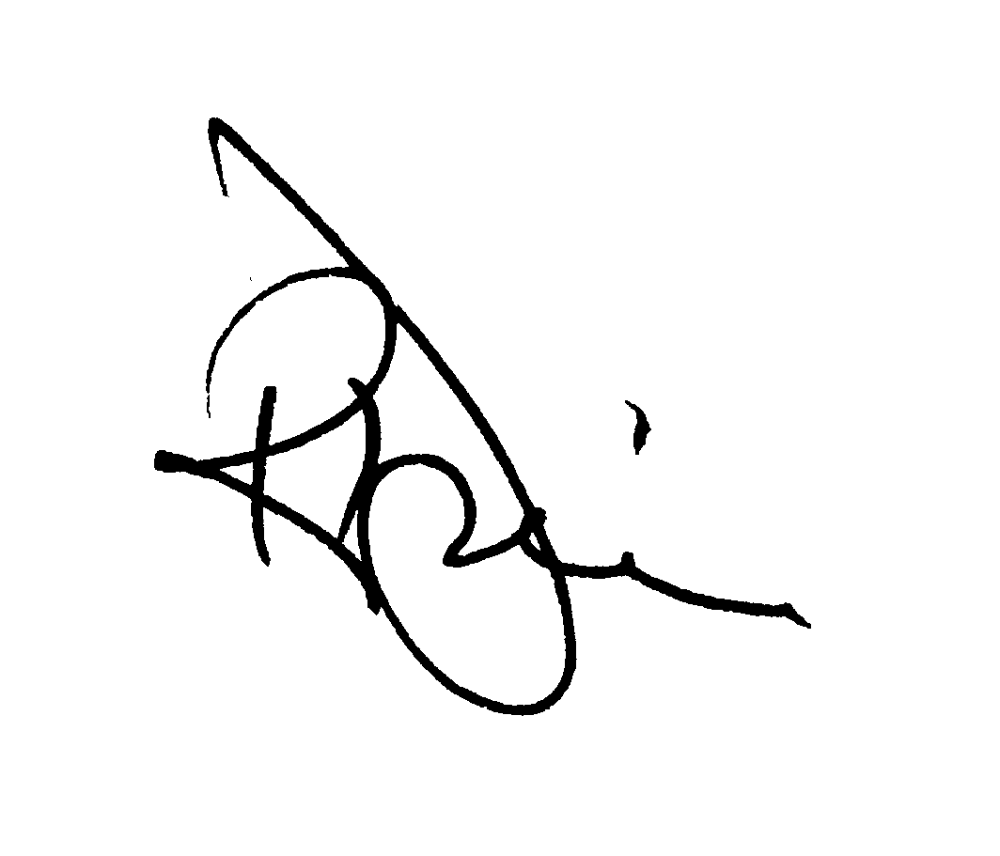

Welcome!
If you're looking at this web site it's a sign that you've already taken one step away from the crowd. We welcome those who possess that outlook: who wish to test themselves by pushing beyond the norm. It is our desire to provide classes that will allow you to interact with others of your ilk, people with questions and ideas who want answers and exchange.
Classes range from traditional liberal arts courses in Philosophy, Humanities and Greek to Biology, Chemistry and Math. We have hand-picked our faculty and trust that you too will enjoy their wonderful font of knowledge.
In a concerted effort to encourage strong student participation we intentionally limit the size of classes, thus allowing you a better chance to interact with both your peers and your professor. You are expected to take an active role in class, not a passive one. You will find our faculty eager to help you in any way.
To join the program requires only that you have and maintain a 3.5 GPA. (The computer will verify such.) For current class offerings see Honors in the Class Schedule, then sign up for the classes you desire.
Today you stand at the edge of the nest; let us help you determine the direction as you depart.
Sincerely, 
Rick Davis